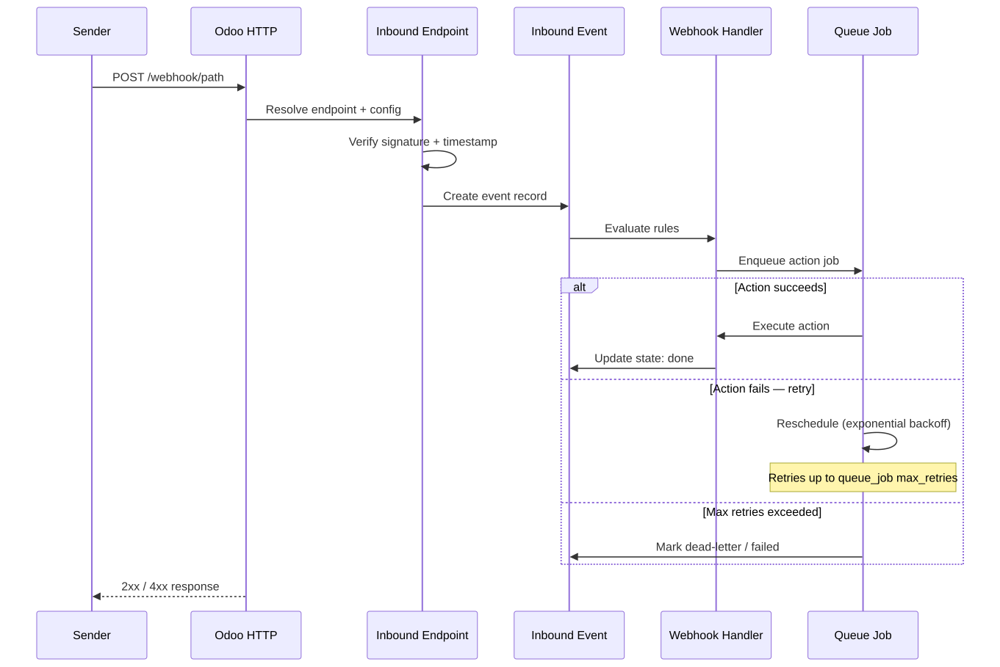

Bring external events into Odoo with more trust, control, and day-to-day visibility.
Secure inbound webhook intake for Odoo teams that need trustworthy validation, clear auditability, and smoother day-to-day operations.
Outcomes
Audience
Capabilities
How it works
Inbound receives the request, verifies that it is trustworthy, filters out repeat or stale traffic, and routes the event into the right Odoo workflow with less custom plumbing around it.

Inbound request flow
Technical proof
The technical section below exposes the deeper request flow, state model, and rule-processing contract so evaluators can inspect how validation, deduplication, and handler execution behave under production conditions.

Inbound processing sequence
Rollout
A typical inbound rollout starts with one clearly scoped endpoint and a trust policy the team can operate with confidence.
Webhooks > Inbound Endpoints and create an endpoint.
Webhooks > Inbound Events.
Looking for a faster path to live inbound integrations? Pair the framework with premium connector modules such as Stripe when you want a more turnkey rollout.
This guide covers the inbound gateway: creating and configuring inbound endpoints, monitoring events, and handling failures.
Install bwt_webhooks_inbound after bwt_webhooks_core and queue_job are in place. At least one handler with Direction = Inbound must exist before creating an endpoint.
Go to Webhooks -> Inbound -> Endpoints -> New.
Required fields:
/webhooks/my-service). Must be unique across all endpoints.Save the record. The endpoint is immediately active and ready to receive requests at the configured path.
Under the Signature tab:
None (no verification) or Shared Secret HMAC (recommended for production).SHA256 is recommended; SHA1 and SHA512 are also supported.Hex or Base64, depending on the upstream provider.X-Signature-256).sha256=); it is stripped before comparison.Under the Identity tab:
Delivery Identity - a header-carried delivery ID.Explicit Idempotency Key - a header-carried idempotency key.Raw Body SHA256 - hash of the raw request body.None - no replay protection.Business Event Identity - a field-path extracted event ID.Explicit Idempotency Key - a header-carried idempotency key.Enable timestamp validation under the Identity tab to reject stale or future-dated requests:
Unix Seconds, Unix Milliseconds, or ISO 8601.Go to Webhooks -> Inbound -> Events to see all received events.
Event lifecycle states:
Use the State filter and saved views to quickly isolate failures.
To reprocess an event in Error or Dead Letter state:
received state.Rejected events cannot be reset. Fix the endpoint configuration first (e.g. correct the signature secret), then resend the request from the upstream provider to create a fresh event.
queue_job worker is running and the job channel is not paused.This guide covers the inbound processing pipeline, model-driven rule contract, and extension points for developers building on or customising the inbound gateway addon.
When a request arrives at an inbound endpoint the pipeline is:
bwt.webhook.inbound.event record in state received and enqueues a background job.rejected.rejected.Valid state transitions:
received -> processing -> donereceived -> processing -> errorreceived -> processing -> dead_letterreceived -> rejected (signature or freshness failure; not retryable)Operators can reset error and dead_letter events back to received for reprocessing. rejected events are closed and require a new inbound request.
Rules are rows on bwt.webhook.inbound.handler.rule, evaluated in ascending sequence order. Each rule exposes:
condition_ids (bwt.webhook.inbound.handler.rule.condition) - each condition specifies a field path into the event payload, an operator (=, !=, in, not in, contains, ...), and a literal value.action_type - one of:done - mark the event done; stop rule evaluation.dead_letter - move to dead-letter; stop evaluation.retry - re-enqueue after retry_seconds; stop evaluation.create_record - create a new record on target_model_name.update_record - update an existing record located via lookup_ids.upsert_record - create or update; locate via lookup_ids.assignment_ids (bwt.webhook.inbound.handler.rule.assignment) - each assignment maps a target field name to a value source: resolved_value (extracted from the event payload path), semantic_field (a named semantic binding), event_field (a field on the event record itself), or literal (a hardcoded string or number).The framework extracts values from event payloads using dot-separated paths (e.g. data.object.id). Path resolution is handled by services/value_extraction.py:
walk_payload_path(payload, path) - navigate nested dicts and lists.extract_header(headers, name) - case-insensitive header lookup.extract_header_parameters(value) - parse key=value pairs from header parameter strings (e.g. Content-Type: application/json; charset=utf-8).These helpers are available for use in custom Python callbacks.
Semantic bindings (bwt.webhook.inbound.endpoint.semantic.binding) allow endpoints to map named semantic names (e.g. company_id, partner_id) to resolved values extracted from the request. Assignments can then reference these by semantic name, keeping rule configuration decoupled from specific payload paths.
To add a computed field available as an assignment source:
bwt.webhook.inbound.event with a new stored computed field.event_field source kind.To add a new action type, extend bwt.webhook.inbound.handler.rule and override _execute_model_driven_handler on the event model to dispatch the new type.
No core file edits are required; all extension points use standard Odoo model inheritance.